8 State Machine Diagrams
This chapter delves into one of UML’s core behavioural modelling tools: the State Machine Diagram. While Class Diagrams describe a system’s static structure, State Machine Diagrams model its dynamic behaviour. They focus on the lifecycle of a single object, detailing the sequence of states it passes through in response to events.
8.1 Why We Need State Machines
Class Diagrams are excellent for defining what an object is and what it can do (its attributes and operations), but they often fall short in specifying when those operations can be called. This temporal ordering, or protocol, is crucial for modelling an object’s lifecycle.
Consider a simple Door object. Its usage is governed by rules:
- A door can only be opened if it is currently closed and unlocked.
- A door can only be closed if it is open and the doorway is clear.
- Turning the key locks an unlocked door and unlocks a locked one.
While these rules can be described using OCL preconditions, this approach provides a fragmented view and doesn’t clearly show how the operations are linked together. State Machine Diagrams excel at visualizing this entire lifecycle in a single, coherent view.
8.2 Core Concepts of State Machines
A State Machine Diagram visualizes an object’s behaviour as a journey through a finite number of states. It discretizes behaviour into a set of relevant, abstract states, ignoring irrelevant details. For a Door, the relevant states might be Open, Closed, and Locked; its color is an irrelevant detail.
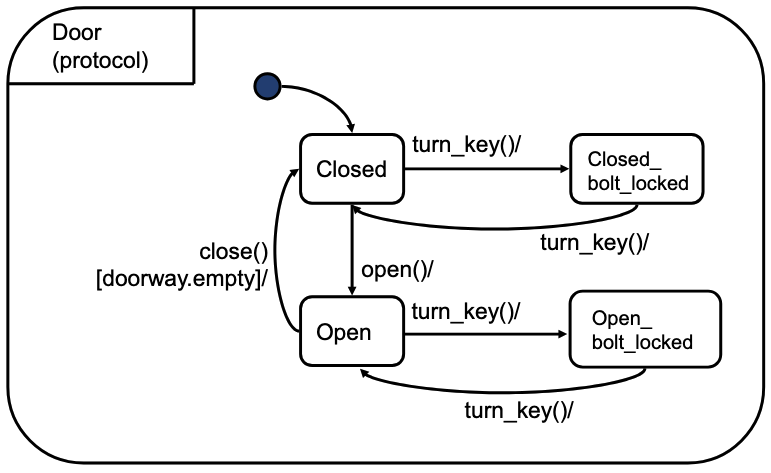
The diagram is composed of a few key elements:
- State: A condition during the life of an object in which it satisfies some condition, performs some activity, or waits for an event. It’s shown as a rectangle with rounded corners.
- Transition: A directed relationship between a source state and a target state. It specifies that an object in the source state will enter the target state when a specific event occurs and certain conditions are met. Transitions are considered instantaneous.
- Initial State: A pseudostate indicating the default starting point. It is shown as a solid black circle.
- Final State: A state indicating that the object has completed its lifecycle. It is shown as a circle surrounding a smaller solid circle (a bullseye).
8.2.1 Anatomy of a Transition
A transition moves an object from one state to another. Its full syntax is trigger-event [guard] / effect. Each part defines a specific aspect of the state change.
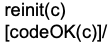
Trigger (or Event): The event that causes the transition to be considered. There are four main types of events:
Call Event: The most common type. It corresponds to the reception of a synchronous call to an operation of the object. The syntax is simply the operation’s name, for example,
open()ordeposit(amount).Signal Event: Corresponds to the reception of an asynchronous signal by an object. Unlike an operation call, the sender does not wait for a reply. The syntax is the signal’s name, for example,
onAlarmDetection.Change Event: This event occurs when a specific boolean expression becomes true. It is used to model reactions to changing conditions. The syntax uses the
whenkeyword, for example,when(sensor.isConnected).Time Event: Occurs after a certain amount of time has passed or at a specific time. The syntax uses the
afterkeyword (for a relative duration) or theatkeyword (for an absolute time). For example,after(5 seconds)orat(2025-12-25).
Guard: An optional boolean condition that must be true for the transition to fire. It is written in square brackets, e.g.,
[doorway.empty].Effect (or Action): An optional behaviour that is executed at the instant the transition fires.
8.3 Protocol vs. behavioural State Machines
UML distinguishes between two main types of state machines, which serve different purposes.
8.3.1 Protocol State Machines
A Protocol State Machine specifies the legal sequence of operations that can be called on an object. It acts as a “user manual” for a class, defining its lifecycle without specifying the implementation of its behaviour. Transitions in a protocol state machine have triggers and guards, but no effects.
A Protocol State Machine defines the valid order of operations. It answers the question: “What can happen next?” It is primarily used during analysis and interface specification.
A key question for protocol state machines is what happens when an unexpected event occurs (e.g., a slam() event arrives at a Door). UML leaves this undefined, meaning it’s up to the modeller to specify whether such events are ignored, rejected, or cause an error.
8.3.2 behavioural State Machines
A behavioural State Machine goes further by specifying the object’s reactions to events. It models the effects (actions or activities) that are executed when transitions occur or when the object is in a particular state.
A behavioural State Machine defines what an object does in response to events. It is a specification of implementation and is used during system design and construction.
In addition to effects on transitions, states themselves can have associated behaviours:
- Entry Action: Executed whenever the state is entered (
entry / action). - Exit Action: Executed whenever the state is exited (
exit / action). - Do Activity: An ongoing activity performed as long as the object remains in that state (
do / activity). It can be interrupted by an outgoing transition.
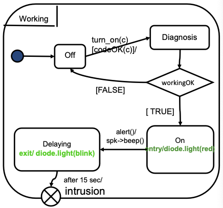
In contrast to protocol state machines, behavioural state machines have a default behaviour for unexpected events: they are simply ignored.
8.4 Advanced Concepts: Structuring Complexity
Real-world objects can have complex behaviours that would lead to messy, unreadable “flat” state machines. UML provides powerful structuring mechanisms to manage this complexity.
8.4.1 Hierarchical States (Composite States)
A Composite State is a state that contains its own nested state machine. This allows for abstraction and top-down reasoning. A high-level state like Working can be expanded to reveal a detailed sub-machine that handles its internal logic. This is powerful because a single transition leaving the composite state (e.g., shutdown()) applies to all of its substates, dramatically reducing visual clutter.

8.4.2 Orthogonal Regions (Concurrency)
An Orthogonal State is a composite state that is divided into two or more independent regions, each with its own sub-machine. When an object is in an orthogonal state, it is simultaneously in one substate from each region. This is UML’s way of modelling independent, concurrent behaviours within a single object, which avoids a “combinatorial explosion” of states.
The primary mechanism for entering and exiting these concurrent regions is through Fork and Join pseudostates. A fork splits a single incoming transition into multiple concurrent transitions, one for each region. A join synchronizes multiple incoming transitions from different regions into a single outgoing transition.
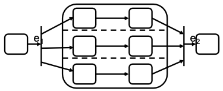
8.4.3 Other Essential Pseudostates
To create sophisticated flows, UML provides several other special states (pseudostates):
Choice vs. Junction: These both represent branches in a transition path, but their semantics are critically different. The key distinction is when the guards are evaluated relative to the transition’s actions.
- A Choice (diamond) models a dynamic branch. Its guards are evaluated after the actions on the incoming transition segment have been executed.
- A Junction (circle) models a static branch. Its guards are evaluated before any actions are executed.
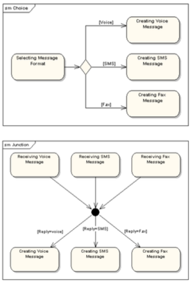
- History States: A History State (
HorH*) is a pseudostate that remembers the last active substate of a composite state. This is invaluable for modelling interruptions.- Shallow History (
H): Remembers only the immediate substate. IfConnectedis left while in theRunningstate, a transition toHwill resume inRunning. - Deep History (
H*): Remembers the full state configuration. If the machine was in theFastsub-state ofRunning, a transition toH*would resume inFast.
- Shallow History (
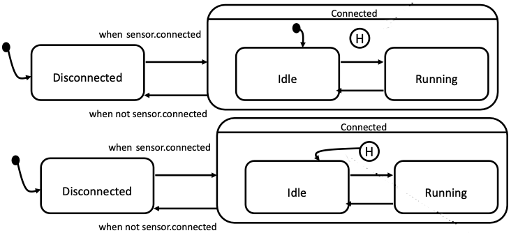
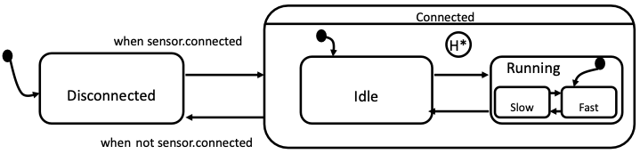
- Entry and Exit Points: These provide fine-grained control for transitions that cross the boundary of a composite state, allowing them to bypass the default initial/final states.
- An Entry Point allows a transition to target a specific internal state, useful for skipping initialization steps.
- An Exit Point allows an internal state to trigger a specific transition out of the composite state, useful for handling specific outcomes like errors.
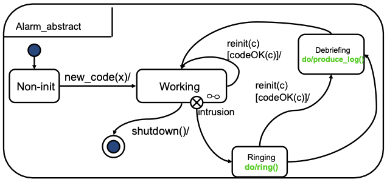
By using these advanced features, State Machine Diagrams can model even the most complex object lifecycles in a structured, understandable, and precise way.
8.5 State Machine Semantics: The Rules of Execution
While State Machine diagrams are visually intuitive, their execution follows a precise set of rules, or semantics. Understanding these rules is essential for correctly interpreting complex diagrams and predicting system behaviour, especially when ambiguities like conflicts or concurrency arise.
8.5.1 Configurations and Conflicts
At any moment, a system’s state is defined by its configuration: the set of all currently active states at every level of the hierarchy.
A conflict occurs when a single event could trigger multiple different transitions from the current configuration. For two transitions to be in conflict, they must:
- Be triggered by the same event.
- Have guards that are both true.
- Originate from source states that overlap (e.g., a state and its substate).
8.5.2 The UML Priority Rule
To resolve conflicts, UML defines a clear priority rule: the transition originating from the most deeply nested state has priority. This means an action defined on a substate will always be chosen over a conflicting action defined on one of its parent states. It’s important to note this is a specific convention of UML, other formalisms might use different rules.
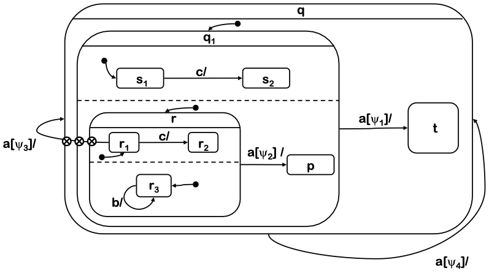
8.5.3 Non-Determinism: When the Rules Aren’t Enough
Sometimes, the priority rule is not sufficient to resolve all ambiguities. This leads to non-determinism, where the model allows for more than one possible correct behaviour.
- Unresolvable Conflicts: In an orthogonal state, if an event triggers a transition in one region and a conflicting transition in another, the priority rule does not apply because neither state is “deeper” than the other. The system will make a non-deterministic choice and fire only one of the enabled transitions.
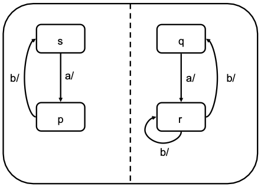
- Simultaneous Transitions & Undefined Order: If an event triggers one transition in each of several orthogonal regions, all transitions will fire. However, the order in which their actions are executed is undefined. If these actions modify a shared variable, the final value of that variable can be unpredictable, as it depends on which action runs last. More generally, if the actions are sequences like
a;b;cande;f;g, any interleaving of these sequences is considered a valid execution.
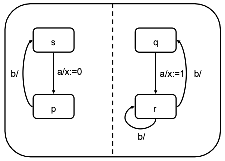
8.5.4 Semantics of Junctions and Choices
The distinction between Junction and Choice pseudostates is purely semantic and relates to when guards are evaluated within a single, run-to-completion step:
- Junction (Static): A junction is evaluated “beforehand.” The entire path from the source state to the final target state is determined before any actions on the transitions are executed.
- Choice (Dynamic): A choice is evaluated “after.” The system executes the action on the incoming transition segment first, and only then evaluates the guards on the outgoing paths to determine where to go next.
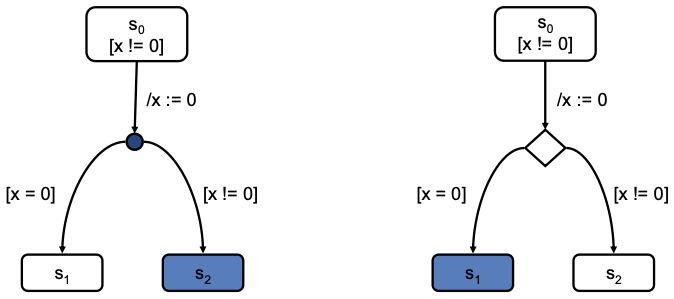